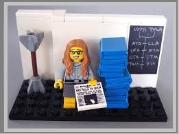

Hamilton made up the term "software engineering" during the Apollo space mission days.
Hamilton's innovations go beyond the feats of playing an important role in getting humans to the moon.
In 1986, received the Augusta Ada Lovelace Award by the Association for Women in Computing.
In 2003, was given the NASA Exceptional Space Act Award for scientific and technical contributions.
In 2009, received the Outstanding Alumni Award by Earlham College.
In 2016, received the Presidential Medal of Freedom from Barack Obama, the highest civilian honor.
In 2017, received the "Computer History Museum Fellow Award"
In 2017, a "Women of NASA" LEGO set went on sale featuring mini-figurines of Hamilton, Mae Jemison, Sally Ride.
To buy LEGO, click here! 